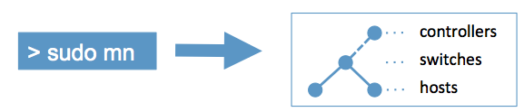

Mininet: An Instant Virtual Network on Your Laptop (or Other PC)
Mininet creates a realistic virtual network, running
real kernel, switch and application code, on a single
machine (VM, cloud or native), in seconds,
with a single command:

Because you can easily interact with your network using the Mininet CLI (and API), customize it, share it with others, or deploy it on real hardware, Mininet is useful for development, teaching, and research.
Mininet is also a great way to develop, share, and experiment with OpenFlow and Software-Defined Networking systems.
Mininet is actively developed and supported, and is released under a
permissive BSD Open Source license. We encourage you to
contribute code, bug
reports/fixes, documentation, and anything else that can improve the system!